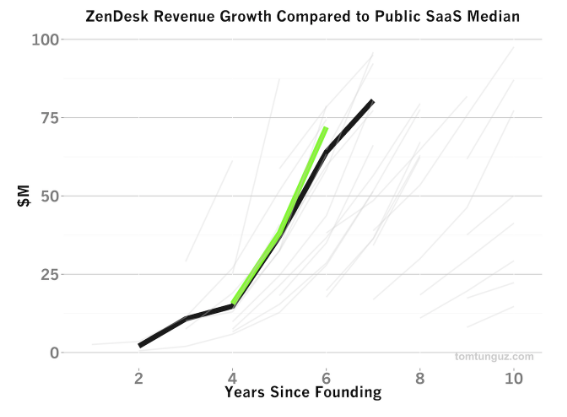
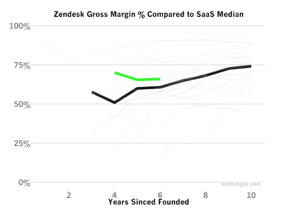
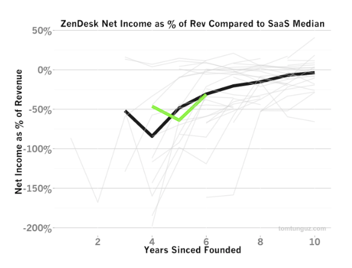
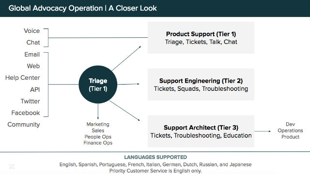
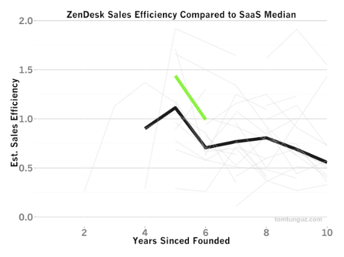
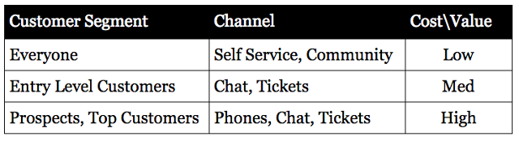

Zendesk is a massive success story in the world of SaaS. They’re in the upper percentile in almost every business success metric while powering help desks and services for more than 100,000 paying customers.
In this Q&A, I interview Ben Collet, Director of Global Advocacy | Enterprise and Strategic Accounts, at Zendesk. Ben has worked at Zendesk for more than six years, and he’s worked in customer facing roles for more than 20 years.
How does one of the leaders in customer support provide their own customer support?
That’s the underlying focus of this interview. More specifically, we cover:
- What’s the difference between customer success and advocacy?
- When should individuals in a support team specialize?
- What are the key metrics for support team success?
- When should a startup invest in phone support?
And more!
Quick mention — if you like interviews like this, also check out interviews with support leaders at 99designs, Vend, Sendle, and Biteable. I ask them all similar questions about team structure, success, and management.
Now, the interview!
The Interview
Hi Ben, thanks for taking the time! Let’s start with describing your role a little bit.
Happy to chat! I’m the Director of Global Advocacy | Enterprise and Strategic Accounts with a focus on Enterprise Support Services inside the Customer Advocacy group.
There are currently more than 300 people working in the advocacy group serving our global customer base. My team looks after our enterprise customer segment who often have unique needs from our operation.
I also lead our programming for Voice of the Customer, B2B Support, Premier Support, and Developer Support.

Source: Tom Tunguz — Zendesk IPO
How does your current role compare to when you first started at Zendesk?
When I was first hired, we had 150 people total [in all of Zendesk], and 15 people in customer advocacy. Everyone was pulling their own weight answering tickets and phone calls, wearing lots of hats.
These 15 people reported into a single support director position. It was a very nurturing, small, and collaborative team.
We were all seen as generalists. Everyone did a bit of everything. We could all answer technical questions or escalate tickets. We even handled billing questions and worked with expired trialers as part of our regular engagement.
When did things start to change?
At 15,000+ paying customers, we saw two things happen. First, we didn’t solve every ticket that we received by the end of each week. Second, we were only getting to about 80% of requests within 24 hours.
It was easy to see that demand was exceeding our staffing resources. We took a closer look by not focusing on overall volumes but on the quantity and duration of our longest tickets. We identified our Median Resolution Time, and looked at how many tickets we were receiving weekly above that median. Once we discovered that resolution time, we found that there was a significant and consistent volume of tickets that were really complex. We called these tickets “tank tickets.”
There were also enough of these tickets to justify a single person working on them. Each person would rotate into the tank tickets every week or so. It freed up everyone else’s time so we were more available and faster at keeping pace with weekly demand.
What happened when you did this?
Reply time instantly improved by a couple of hours.
We learned that if one person focused on tank tickets and that they could help this much, what would happen if we had someone focus on the next increment?
That’s how the teams developed. Once you have operationally justified allocating 20% (or two people of a 15 person team) in a new full time role, you may be looking at a new team — and for Zendesk that was the birth of T2 [Tier 2 Support]!

Source: Tom Tunguz — Zendesk IPO
What are some of your key metrics?
It definitely depends on your portfolio. Not every industry or customer service organization subscribes to a one-size-fits-all suite of business intelligence, of course. Back when we were a startup, we initially looked at total ticket volumes as a correlation to the number of trials as a measure of our success. Over time, that correlation lost bearing on our operation and we moved on. Eventually, we solved the annual staffing model needs within 1% so we could focus on more nuanced areas of the customer experience. Today, our current KPIs center around midmarket and enterprise class operating goals like Business Impact and Customer Satisfaction.
For Zendesk Advocacy, it’s about the combination of the at-the-wheels customer experience via Customer Satisfaction and operational excellence via SLA adherence. For example, we’re obligated to reply within 30 minutes on Critical Business Impact requests, so customer wait time is vitally important to meeting our commitments.
I also look at customer effort — the number of touches on a ticket.
No first reply time?
We worked on improving first reply time for a long time, but it ended up not being enough.
Often, the reason you’re looking at first reply time is because a customer says, “What took so long?” So, you start wanting to pursue that. You want to make your operation faster.
That’s what we did. As a result of a number of improvements, we saw normalized customer wait times for more than 80% of our operation. But it still wasn’t enough!
Talking to customers a little bit more, we found out that when they need a fast response, it’s often something really urgent that demands immediate help. Even if you were speedy 9 out of 10 times, if that tenth request for help was urgent, we failed.
So, we needed to be fast when it matters most.
How did you build this into your support experience?
We realized that customers need the control to tell us the level of urgency for the ticket. Now, they control the urgency of the ticket when they submit a request for help.
We built this tool for Priority Support customers first, and now urgency settings are built into all out-of-the-box Zendesk subscriptions.
Also, letting customers participate in the operating levers builds a better relationship.
How impactful is this to the customer?
Our enterprise customers enjoy a 97% CSAT score.
Whoa! What about your other customers, how much volume are you working with?
We respond to 720,000 requests per year. That’s global, with 300 Advocates.
How do you feed these conversations into product decisions?
There lies the gold.
First, you need to know about all the conversations that involve product feedback. Even with extensive training, you’ll usually only be able to flag about one-third of product feedback conversations with manual data capture methods. So you need to use a tool that allows you to have a highly accessible and qualified intake mechanism while being extremely low effort for end users to participate.
Then, you need to capture the problem statements, not the solutions. The development team can build a solution that solves multiple problems. So it’s imperative for Zendesk to use machine learning which is purpose-built to help with these language-based objectives.
Once you have the problem statements, you need to break your data into segments. Look at trialers, lost prospects, new customers, veteran customers, churned customers, etc. What was their product feedback? Where did the product meet them halfway, more than halfway, less than halfway?
Also, you want to understand your customer voice broken down by segments. Who are your top customers? What is your base? What are their problems?
Painting a picture from a Voice of Customer perspective can be terrifically insightful to your support operation for the same customer segment. Bringing together powerful business intelligence from both lenses allows for a more holistic understanding of the customer experience.

Source: Tom Tunguz — Zendesk IPO
How do you integrate your customer knowledge into your business decisions?
Right now, we have a continuous cadence every quarter. This cadence matches the quarterly business reviews with our top customers. They have roadmap conversations with us.
The practical reality though is that products evolve on more than a quarterly pace. So we have to balance the quarterly conversations with product releases that are often working on independent scheduling factors.
How are the support teams structured at Zendesk?
Post sales, there are three main groups: Customer Success, Professional Services, and Customer Advocacy.
Customer Success is localized and assigned territories as part of an intentional, customer segmented, retention strategy. They focus on aligning Zendesk usage to customer success goals. On the ground, this is expressed through the pursuit of sound product adoption through phases of the customer journey such as Launch Guidance, Mentorship Programs, etc.
Professional Services caters to our customers that need expert resources in implementing Zendesk into their integrated IT landscape. By frontloading technical architecture and custom design that is future-proof for their planned growth, our customers have less friction and can focus on investing in their own customer’s success.
Once the customer is launched and live, and often even throughout those phases, Customer Advocacy is the reactive, hands on, highly available 24/7, continuous technical resource. We excel at providing targeted product education and troubleshooting via an effortless omni-channel experience.
How does your tiering system work?
Tier 1 covers broad, generalist work. They give you holistic solutions. They’re great to talk to customers because they do so many things. Nearly 90% of our operation solves customer requests in this tier.
Tier 2 is our specialist team. They go a bit further and tie front end behaviors to back end infrastructure. The majority of the remaining 10% of our customer requests are solved in this tier.
Tier 3 solves the final % of tickets. Tier 3 is a team of our technical architects that qualify requests and partner on escalations with our Development, Operations, and Engineering Teams.

How triage works at Zendesk, supporting 720,000 requests per year
What kind of volume do you handle?
720,000 requests per year. Of these requests, you’re only hearing from about 30–40% of customers, so most customers only engage via 10–15 conversations per year. Enterprise customers are a bit more complex and can engage with us 10–15 conversations per month.
What are some customer success metrics you’d recommend for a new SaaS company just starting out?
You want some kind of impact survey, something like customer effort score, customer satisfaction or NPS.
You don’t want to judge your operation by the number of tickets. Instead, how many customers did you actually talk to? How many of these customers expanded with your company or churned in the same quarter as their conversation? How many prospects or trialers spoke to your support team and converted into customers? What is your cost per request? What channels are efficient and can invest in your base? What channels are costly but provide a premium and justified experience to your strategic focus?
It’s important to establish a baseline early.
Have you ever worked with a third party support provider? When should a company work with one?
You should look at the complexity of your product, recruiting pipelines, team culture, and volume forecasts.
If your product is really accessible and easy to troubleshoot, odds are someone else can hold the line. Alternatively, if your product is complex — for example, if it takes two months to train someone up — then it’s probably too much for a third party to handle.
Consider your recruiting pipeline. For example, it once took us nine months to find a person who spoke a specific language in a specific region. Third parties often have an existing operations and recruiting nets with trusted talent.
If you have a healthy, strong culture in your support team, then you can supplement your staff where you need to a bit, but if you’re doing it when morale is low or when you don’t have an established vision that everyone can map to, then you will hurt your brand. The team may feel undermined.
If you see non-forecastable demand [can’t predict the future], or forecastable but volatile demand [such as major product releases], then third parties can help with burst capacity or to fill in coverage gaps.
I’ve seen a dramatic upturn in quality in third-party support. There are now boutique shops that offer deep, meaningful management and responses.

Source: Tom Tunguz — Zendesk IPO
How much more effective is phone support compared to live chat or email?
Both email and phone are 1:1 where 1 Advocate is serving 1 Customer at a time. So the general operational efficiency is the same. At the wheels, we know that Advocates can jump in and out of tickets organically so as to maximize their time whereas phones are a concentrated exercise that require dedicated attention. Chat can see 1 Advocate handle 3 concurrent chats.
With chat and phone support, I can course-correct on my approach to handling their problem immediately so I can learn in real time and move forward on the problem. Email, as a medium, has more correction volleys that span greater punctuated periods of time. So email is a better medium for issues that are not time sensitive nor complex and is more ideal for quick questions that commonly see a First Touch Resolution. So it’s important to align the right channel to the desired customer experience as part of assessing the effectiveness of the channel.
Timewise, phone and email are about the same. Live chat is about three times faster than email.
How do you train agents to work across different channels?
Overall, our training investment is centered around the product. The medium is only 10% of the strategy.
There is an onboarding process with new agents. We want to make sure that they’re comfortable with this process first so we start them on tickets where there is more allowance for time and validation of response quality. Once that happens, we move you to chat. Chat is a little more challenging than tickets while also a little more forgiving than phones. You can go with a minute of silence on chat, for example, without the same level of soft skill handling as a minute of dead air on a phone call.
Finally, you gravitate towards phones. Once you can do phones, then you can do social media. Social media has all the same requirements, but then you’re also representing the brand. It’s not for everyone. Some folks are uncomfortable speaking to beyond 1:1 conversations. Finding the people that are energized at that prospect is the secret.
When should a startup invest in phone support?
I’ve always come at it backwards. We offered phone support for everyone, then we started to be more selective about when to deploy it as a channel.
It also depends on who you are. If you’re a startup, engagement and growth rate is everything. By talking to your customers, your support organization becomes more agile and adaptive to their experience. You’ll be more successful as a result.
If you can’t do phone support for everyone, do it for your top customers. If conversion rates of prospects to customers is your focus, then offer your prospects the phone channel.
Before applying company specific and support organization specific goals, a basic way to think about aligning channels to customers is like this:

Any signs for a support organization that needs to improve?
When you’re a support manager and you’re mostly managing escalations or fires rather than managing a proactive or positive support experience, then that’s a red flag.
If your KPI’s are no longer actionable or if they don’t give you ground to improve, then it may be time for a fresh look at your goals and approach.
If your attrition rate is above industry norms, then you might have an opportunity to invest in culture.
If your budget team only views your organization in terms of cost, it’s up to you to pivot the conversation back to value.
Any solutions?
It can be anything. The moment you achieve one customer experience milestone, a new gap or opportunity to improve will appear. That’s what I love about the Support puzzle!
At a really high level, the important thing for Customer Advocacy at Zendesk revolves around our sense of identity: We know who we are. We know our purpose and cultural values as a company and a team. We are always measuring our performance and always testing our capabilities. And we know our customers. We measure their experiences and validate our data with the rest of the business to paint a complete picture. From this position, we are able to adapt our operation to our customer experience as it evolves in an honest and straightforward way.
More tactically, we tend to think of our operation in terms of People, Process, and Technology. When you have a challenge, there tends to be a prescriptive blend of those three categories that make up an optimal solution.
For example, if you are using People to solve a Process or Technology problem, you might have a high attrition rate or low culture score in your employee assessment programs. If you are using Process to solve a People problem, then your customers probably feel the effort and may spend more time managing their experience than getting help. If you are using Technology to solve a People problem, then even though your internal metrics may improve, your customer experience measures may still be volatile.
So, make sure to spend enough time in the problem space, not the solution space. Understand which category captures your operational challenge. Then, make sure the solution is in the same category.
Most importantly though, the Zendesk formula involves Process and Technology serving People. Too often, as support teams grow and scale to meet demand, they can often allow the inverse to be true. This almost always leads to negative impacts to the customer experience.
Be causal. Don’t be afraid to look at the cause for a high volume of questions as being a better product experience. I saw an Advocate see a product gap that was causing 10,000 requests a year, work with our engineers to put a button right where it needed to be, and BOOM! The cause of the transactions was addressed at the source rather than being operationalized.
Be idealistic. Ask yourself what the ideal customer experience would be in a given scenario. Then shape that experience into a sustainable and practical formula. Too often we seek to identify only scalable solutions first and may not push ourselves to achieve more in the strategic exercise.
Thanks! There’s so much to learn from here! Last question: Any predictions for the future of customer support? How will customer support be different in 2020?
Gartner says 85% of customers will self-serve by 2020. They’ll do this with machine learning and bots. I love that.
I think that’s what’s coming. I couldn’t be happier. It means the conversation space is removed from repetitive work, and you can focus on the conversations that matter. You can take the time to help customers personalize their own experiences.
Everyone’s going to benefit from a much more efficient operation at the front door.
We’re going to know a lot more about our customers. We’re going to have more significant conversations.
Thanks for the taking the time!
My pleasure, this was fun.
If you liked this interview, check out more interviews with support leaders at 99designs, Vend, Sendle, and Biteable. For future stories, subscribe to Influx research and reports.
For more information about Influx, check out support services for SaaS, eCommerce, and startups. Learn more about Zendesk support software here.
Another thanks to this detailed IPO break down by Tom Tunguz. I highly recommend subscribing to his blog.